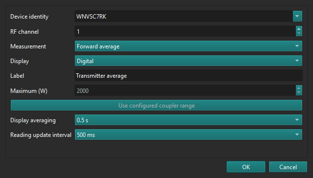
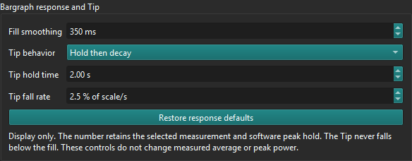
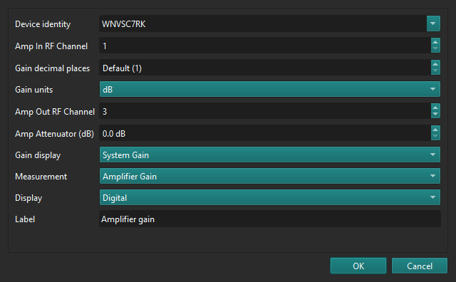

Instrument Properties
Properties lets you turn an instrument into the meter you need: choose its WN-2, channel, reading, display style and response. You can show the same channel several ways, give each meter its own settings, and save different layouts for different operating activities.
On this page
- Open Properties and make a change
- Source and measurement
- Appearance and scale
- Response, averaging and peak hold
- Specialized instruments
- Layout placement
- Five controls that sound similar
- CW and SSB examples
- Common questions
Open Properties and make a change
- Right-click the instrument and choose Properties. When an instrument has keyboard focus, Alt+Enter also opens it. Press F1 in the dialog to return to this guide.
- Choose Device identity and the appropriate RF channel or auxiliary input. The device supplies the readings; the channel identifies where that coupler is connected.
- Choose a Measurement, then a Display. For example, Forward peak with Vertical makes a vertical peak-power bar. Combined RF Channel with Analog makes a cross-needle meter.
- Adjust the label, scale and any response controls you need. OK applies changes to this instrument in the current layout; Cancel leaves it as it was.
- Use Layout → Save or Save As to keep the result. To compare two presentations, enable Edit Layout, duplicate an instrument and configure the copy.
You do not need Edit Layout to change a reading or appearance. Enable it when adding, moving, resizing or regrouping instruments. Placement controls are hidden during normal operation.
The dialog adapts to your choices. Some rows appear only for certain measurements or displays. A greyed scale is usually unused by a Digital reading. A hidden control is not a missing installation component. The tables below describe where each control has an effect.

A digital average-power instrument. The settings describe this instrument; they do not change the coupler calibration. Select image to enlarge.

Source and measurement
| Property | What it does | Used by |
|---|---|---|
| Device identity | Select the local WN-2 or connected Remote Station device that supplies readings. Selecting a name does not connect the hardware. | All instruments. |
| RF channel | Choose CH1–CH4 for the coupler connected at the desired RF point. The gain instrument calls this Amp In RF Channel. | RF power, SWR, Return Loss and Amplifier Gain. |
| Measurement | Choose what to show: average or peak watts, Combined RF Channel, SWR, Return Loss, gain, an auxiliary reading, an output control or Mini-Scope. | All instruments. |
| Display | Choose Digital, Horizontal, Vertical or Analog when supported. Combined RF Channel has horizontal or vertical multi-bars or an Analog cross-needle face. | RF power supports all four. SWR, Return Loss and gain use Digital. Analog, DC and temperature support Digital or bars. Inputs, outputs and Mini-Scope use their dedicated display. |
| Label | Give the instrument a useful name such as Transmitter peak, Amp output or Supply voltage. It does not rename the hardware. | All instruments. |
To change many device assignments together, use Layout → Bind instruments to device. Channels, readings and appearance stay as configured. Remote readings are read-only; binding does not enable local output control or Scope capture on a remote device.
Appearance and scale
| Property | What it does | Used by |
|---|---|---|
| Maximum (W), Maximum (units) | Set the top of the displayed scale. A smaller useful range makes normal changes easier to see. It does not change the coupler rating, measurement calculation, hardware LCD or protection setting. | RF bars/analog/Combined meters and auxiliary bars. Digital RF scale is unused. |
| Minimum | Set the bottom of an auxiliary bar scale, for example a temperature range below zero. It must be less than Maximum. | Temperature, Analog input, DC voltage and DC current bars. |
| Use configured coupler range | Copy the selected device/channel’s configured watt range into this instrument’s manual Maximum. This is a one-time copy; Automatic display range is a different control. | RF power displays other than Digital, including Combined RF Channel. |
| Automatic display range | Expand the RF scale promptly for larger readings and reduce it after sustained lower readings. The manual Maximum remains saved for when automatic range is turned off. | Standalone RF bars/basic analog meters and Combined RF Channel. |
| Threshold mode | Use percentages of the displayed range or absolute watts/engineering units. Percentages move with the scale; absolute thresholds remain at their entered values. | RF bars, Combined RF bars, basic RF analog scale regions and auxiliary bars. |
| Yellow starts at / Red starts at | Choose where the middle/high colored regions begin. These are visual guides, not fault rules or hardware trip limits. | Displays with colored scale/bar regions. |
| Region colors | Choose Low, Middle and High colors. Their names describe regions; a region need not be green, yellow or red. | Displays with colored scale/bar regions. |
| Restore bar defaults / Restore scale-region defaults | Restore percentage thresholds to 70% and 90%, with green, yellow and red regions. This does not restore every Properties setting. | Displays with colored scale/bar regions. |
| Needle color / Peak marker color | Choose colors for a basic analog meter. Restore needle and marker defaults returns the needle to the theme color and the marker to magenta. | Standalone Analog RF power meters; not the cross-needle meter. |
| Show peak marker | Show or hide the thin marker without disabling its tracking or separate software peak hold. A basic analog meter’s marker uses the corresponding peak reading. | Standalone RF bars and basic analog meters. Auxiliary bars are live level displays without the RF peak marker. |
For an enlarged meter, right-click and choose Enlarge in separate window. Its settings and source stay with it. See Enlarged meters, themes and scaling and analog/cross-needle meters.
Response, averaging and peak hold
| Property | What it does | Used by |
|---|---|---|
| Display averaging | Choose Off (default), 0.25, 0.5, 1 or 2 seconds. A trailing time-weighted mean steadies the displayed average watts, including valid zero-power pauses. The number and its bar/needle use this mean. | Forward average, Reflected average and Combined RF Channel, in their supported displays. |
| Reading update interval | Choose how often a Digital RF number changes: Live, 100, 250, 500 (default), 1000 or 2000 ms. This paces the number rather than averaging it. Zero readings and validity changes may appear immediately. | Digital RF power, SWR and Return Loss; not auxiliary readings or gain. |
| Fill smoothing | Choose Off or a response time up to 2000 ms; default 350 ms. Only the colored fill moves more slowly. The selected number and Tip have their own behavior. | Standalone horizontal or vertical RF power bars; not Combined RF or auxiliary bars. |
| Tip behavior | Follow reading follows the selected reading. Hold then decay retains a high reading before falling. Maximum until reset retains the highest selected reading since reset. The Tip always stays at or above the visible fill. | Standalone horizontal or vertical RF power bars. |
| Tip hold time / Tip fall rate | Set how long Hold then decay waits and how fast its marker falls, as a percentage of full scale each second. Defaults: 2 seconds and 2.5% per second. | RF bars with Tip behavior set to Hold then decay. |
| Restore response defaults | Restore 350 ms fill smoothing and Follow reading, with the default hold/fall settings. Display averaging is a separate control and is not reset by this button. | Standalone RF bars. |
| Software peak hold | Off follows reported peak readings. Timed retains their rolling maximum for Hold duration. It affects peak numbers, independently of an average bar’s Tip. | Forward peak, Reflected peak and the peak readings in Combined RF Channel. |
| Hold duration | Choose the rolling peak window, up to 60 seconds, in 0.25 second steps. A short 0.5 second hold is a useful speech starting point. | Instruments with Software peak hold set to Timed. |

Fill smoothing and Tip behavior are separate controls. This example selects Hold then decay. Select image to enlarge.

Invalid, stale or disconnected data clears display history instead of retaining a plausible last-good live reading. Changing the source, calibration or Properties and restarting the application also starts fresh. Right-click Reset display hold/range to clear presentation history and automatic range manually. See the detailed response guide.
Specialized instruments
| Property | What it does | Used by |
|---|---|---|
| Auxiliary input | Choose input 1–4 on the selected WN-2. Channel selection is replaced by this input selector. | Analog input, Temperature and Digital input. |
| Sensor model / Display units | Choose LM35 or LM34 and Celsius or Fahrenheit for this temperature instrument. Review the displayed range and absolute thresholds after changing units. | Temperature. See the temperature guide. |
| Show raw ADC counts / raw input bit | Show the received count/bit rather than the configured engineering reading or logical input state. Raw temperature shows counts, not degrees. | Analog input, Temperature, Digital input, DC voltage and DC current. |
| Input decimal places | Choose the precision of a converted input reading; Device default uses the saved input configuration. Extra decimals do not add measurement accuracy. | Analog input, Temperature, DC voltage and DC current. |
| Amp In RF Channel / Amp Out RF Channel | Select two different RF channels on the same WN-2: the input measurement point and amplifier output. Gain uses calibrated forward-average powers. | Amplifier Gain. |
| Gain display / Amp Attenuator (dB) | System Gain compares the two measurement points. Module Gain also accounts for the configured loss between the input measurement point and amplifier input. The attenuation is added only in Module Gain. | Amplifier Gain. See gain setup and Low RF behavior. |
| Gain units / Gain decimal places | Show gain in dB or as output/input power ratio, and choose the numeric precision. The default is one decimal place. | Amplifier Gain. |
| Digital output (1–4) | Choose which local hardware output the control operates. It is not an RF channel. Selecting it in Properties configures the control; operating the control is a separate action. | Digital output; local sessions only. |
| Output mode / Pulse duration | Choose Latched ON/OFF or Momentary timed pulse, 250–5000 ms (default 500 ms). Pulses are host-timed; communication or application delays can extend them. | Digital output. Read digital output operation before connecting external equipment. |
| Scope Sensor (1–2) / Maximum (counts) | Choose the supported Scope sensor and the Mini-Scope vertical display limit, up to 255 counts. This is a waveform display, not an RF watt scale. | Mini-Scope; local sessions only. See Scope and Mini-Scope. |

Gain has its own controls instead of RF bar response settings. Select image to enlarge.

Layout placement
These controls appear when Edit Layout is enabled. For most arrangements, dragging, resize handles and the Layout Edit Mode walkthrough are the easiest starting point.
| Property | What it does | Used by |
|---|---|---|
| Group (select or create) | Place the instrument in an existing section or enter a new group name. Use a meaningful name such as Radio or Amplifier. | All instruments while editing the layout. |
| Columns in this group | Set the number of layout grid columns for the chosen group. It affects available space for the group, not just the width of one instrument. | Group placement while editing. |
| Row (1-based) / Column (1-based) | Choose the instrument’s top-left grid position. Numbering begins at 1. A refined grid has smaller cells. | All instruments while editing. |
| Row span / Column span | Set how many grid cells the instrument occupies. Larger spans allow more room for scales, labels and Combined RF readings. | All instruments while editing. |
| Find first free position | Find room for the current instrument footprint in the selected group. Resolve any placement warning before choosing OK. | All instruments while editing. |
Five controls that sound similar
- Average-power calculation: a device/channel measurement setting under Device → Settings → RF couplers. It determines how detector readings become calibrated average watts. It is shared by meters, logging and telemetry. See Power, SWR and Return Loss.
- Display averaging: a per-instrument mean of those calibrated average watts over a chosen time window. It steadies that instrument only. It does not alter recorded or transmitted measurements.
- Fill smoothing: slows only the movement of a standalone RF bar’s colored fill. It is not an average-power calculation; the number can change sooner than the fill.
- Tip behavior: controls the thin marker. On an average-power bar, a retained Tip is a high average reading, not hardware peak power.
- Software peak hold: retains the highest reported peak reading within a selected interval. It is not an average or a new hardware peak measurement.
Reading update interval is another independent choice: it sets how often a Digital RF number is redrawn. A slowly updating number is not necessarily an averaged number.
Instrument Properties does not replace Device Settings. Use Device Settings for coupler models, calibrated measurement processing, analog/DC conversions and hardware-related choices. Couplers are factory calibrated and do not require additional calibration for normal operation; optional user reference matching is separate from meter appearance.
CW and SSB examples
Steady carrier/CW comparison: show Forward average and Forward peak on the same device and channel. Leave Display averaging Off and Software peak hold Off initially. For the fastest visual comparison, set Fill smoothing Off or use Digital with Reading update interval Live. For keyed CW, valid key-up pauses contribute to the selected averaging window. A steady carrier is the simpler starting comparison.
Readable SSB display: duplicate the forward-average meter. Keep one Off and set the other’s Display averaging to 0.5 s or 1 s. Add a Forward peak bar with a short 0.5 s Timed hold if desired. Start with 350 ms fill smoothing for a steadier moving bar, or turn it Off to compare the two average numbers directly. Keep the same device and RF channel on all three instruments.
Retro cross-needle display: select Combined RF Channel with Analog. The needles show forward and reflected averages. If you enable display averaging, use the numeric SWR rather than the intersection of the averaged needles. With Paired-peak SWR selected in Device Settings, numeric SWR uses its configured peak policy even when the needles show averages.
Common questions
- Why are there no watts? Check the selected device is connected and the instrument is bound to it. A device name and RF channel are separate choices. See connection and binding checks.
- Why do two meters disagree briefly? Check their device, RF channel, measurement, display averaging, numeric interval and peak hold. A retained peak, a slower number and a smoothed fill describe different presentation behavior.
- Why is there no averaging selector on a peak meter? A mean of peak readings would no longer represent the measured peak. Use timed peak hold or the bar’s Tip controls instead.
- Why is a scale greyed out? A Digital RF number does not use a graphical Maximum. Change Display to a supported bar or analog meter when you need a scale.
- How do I get hints over controls? Enable Device → Settings → Application → Enable tool tips. You can also press F1 in Properties.
- Will the WN-2 retain my layout? Layouts are saved as files on the computer. Instrument appearance is not written into the WN-2’s standalone EEPROM. Hardware LCD/settings retention is a separate device workflow.
Choosing an instrument · Detailed meter response · Help home · RF StateSide · RayWn2App operator guide